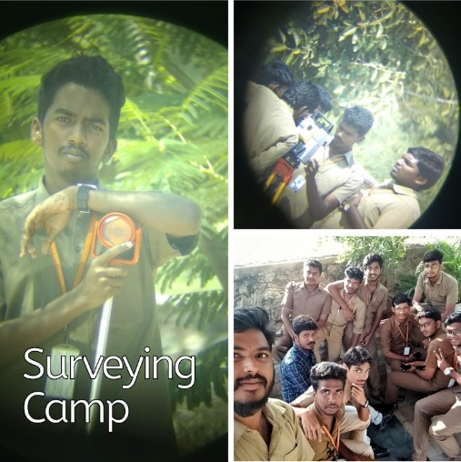
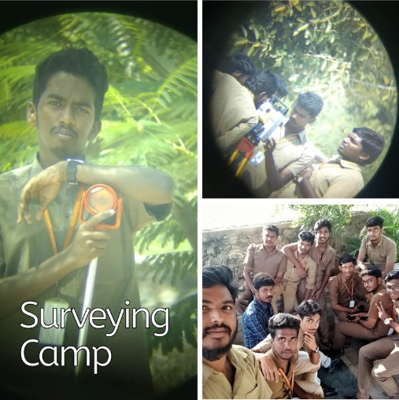

Urban Sprawl Monitoring
The "Urban Sprawl Monitoring" project utilizes advanced technologies to analyze urban expansion patterns. By capturing and assessing spatial and temporal data, this project provides valuable insights into the dynamics of urban growth. Its aim is to support informed decision-making for sustainable urban planning and development. Through comprehensive monitoring, this project contributes to creating resilient and livable cities for the future.
Read more about this is some title
 
